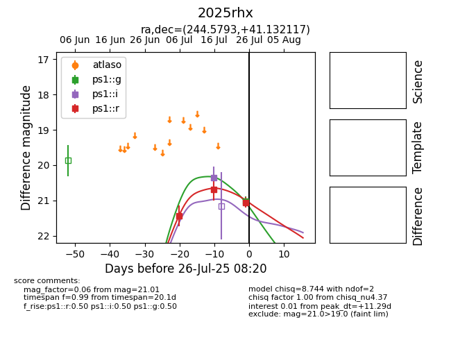

Target 2025rhx at 2025-07-26 08:20, see:
YSE: ziggy.ucolick.org/yse/transient_detail/2025rhx
alt names
2025rhx (yse)
coordinates:
equatorial (ra, dec) = (244.5793,+41.13212)
galactic (l, b) = (65.1552,+45.66142)
photometry
last ps1::g=21.01, ps1::i=20.36, ps1::r=21.06
1 ps1::g, 1 ps1::i, 3 ps1::r detections
